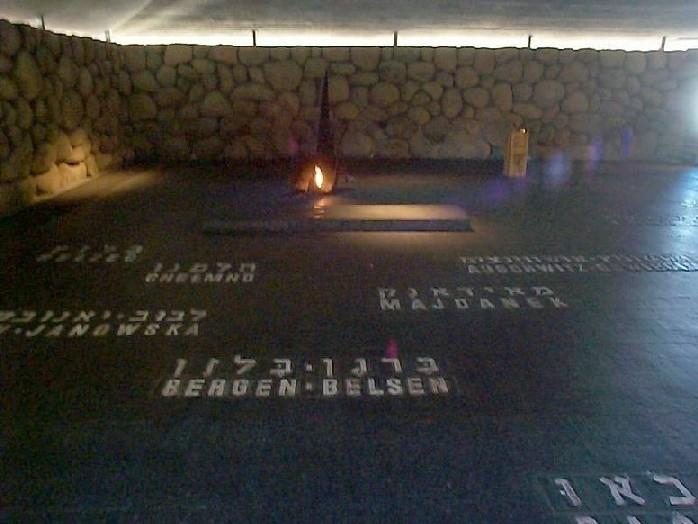
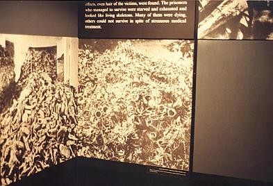
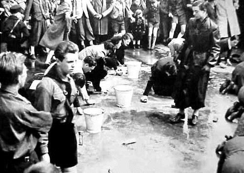
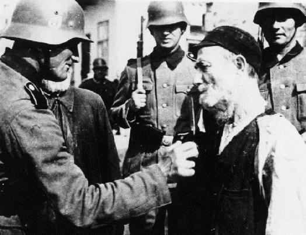
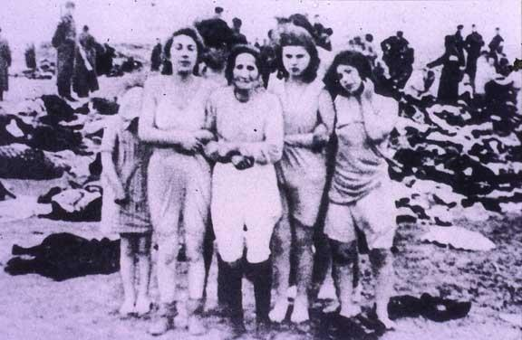
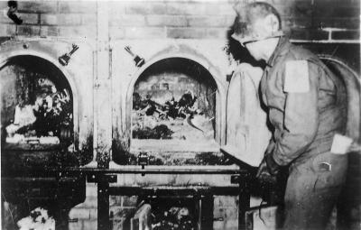

Suite de mon précédent texte sur le sujet: « Les questions idiotes à propos des juifs sous l'Occupation. Ce récit date de 1973. Ce qui est décrit ici est l’ancien Yad Vashem, aujourd’hui transféré au Mont Scopus. Il a beaucoup changé depuis. En mieux, ou du moins en plus moderne et fonctionnel…
Par une journée accablante de l’été 1972, je suis au garde-à-vous dans l’ombre fraîche du Musée du Souvenir de Jérusalem, un lieu solennel et poignant qui a nom Yad Vashem, ce qui signifie à peu près «mémorial».

La «Salle du Souvenir» est un bloc architectural, strict et sans emphase. Les murs sont de pierre brute, la pierre sans grâce de ce rude pays. Le plafond est une immense dalle rectiligne, toute d’un bloc. Une sorte de plate-forme au sol nu et patiné, légèrement surélevée et délimitée par une lourde chaîne de métal noir, accueille les visiteurs. Elle surplombe le dallage sans fin de la Salle du Souvenir, où brûle une flamme perpétuelle.
Ici, pas d’ex-voto: la liste des disparus est par trop démesurée. Seuls figurent, cloués au pilori du sol juif, offerts pour toujours aux regards accusateurs des survivants et des visiteurs, les noms infâmes des lieux sanglants, couchés là, en lettres énormes, catalogue-témoin pétrifié du crime le plus exorbitant de l’histoire des hommes: Maïdanek, Auschwitz, Dachau, Mauthausen… Litanie blasphématoire!
Je suis seul avec le feu qui se tord, là-bas, dans son âtre aux flammes de bronze fauve, figées pour l’éternité. Et je pleure, comme si tous les miens gisaient ici. Je pleure sans ostentation, sans désespoir non plus, mais pas machinalement, ni sous le coup d’une émotion d’emprunt. Je n’essaie même pas d’analyser ce qui se passe en moi: c’est par trop incompréhensible.
De ce crève-cœur, je continue vers l’intérieur du musée de l’Holocauste, dont la devise est « Pardonne, mais n’oublie pas! », et j’entame, derrière les morts, à près d’une génération de distance historique, le long chemin de croix documentaire.
On a reconstitué pour le visiteur les étroits boyaux des égouts du Ghetto de Varsovie. Atmosphère lugubre. Impression d’étouffement. J’ose à peine regarder dans les yeux les fantômes vivants des défenseurs terrés là, dont les photos murales retracent l’héroïque épopée.
Je débouche maintenant dans une salle qui me paraît immense, au sortir de ce souterrain. Je respire avec soulagement: enfin un répit…
Erreur: je retombe en enfer. Une débauche d’images dantesques assaillent ma conscience effarée: l’histoire de l’Holocauste, en clichés noir et blanc, agrandis aux dimensions de l’horreur:

Les juifs meurent:
dans les rues du ghetto, pendus aux gibets, éventrés dans leur lit, brûlés dans leurs synagogues, affamés dans les camps d’extermination…
Les juifs sont battus:
dans les rues de Berlin, par une foule abjecte… Dans la cour d’un stalag, par des tortionnaires sadiques…
Les juifs sont avilis:
ils lavent une rue au savon, moqués par une populace hilare, sous la surveillance de ravissants adolescents ariens, aux yeux impitoyables d’anges de la mort…

Des nazis coupent, en riant, la barbe et les papillotes d’un juif observant…


C’est horrible! Je ne devrais pas continuer à regarder cela. Je me fais l’effet d’être un sale voyeur… J’ai honte de moi… J’ai honte pour l’humanité…
Je n’ai pas terminé la visite. À la fin, j’ai flanché. Ce sont les charniers d’Auschwitz qui m’ont achevé, et surtout les deux squelettes à demi calcinés, trouvés par les premiers libérateurs dans la bouche du crématoire encore tiède…

Et c’est presque en courant que je me suis réfugié dans la salle attenante. Là, je me sens mieux, je respire un air qui me semble humain.
Dans le corridor, non loin de la sortie, un homme est assis devant une table encombrée de prospectus: c’est le préposé à la documentation des visiteurs. Il a lu le chagrin dans mes yeux rougis. Il me sourit avec chaleur et, en anglais, me demande d’où je suis. Je murmure, d’une voix que je m’étonne d’entendre étranglée: « France ».
– N’ayez plus de peine, prononce-t-il, dans un français impeccable, il n’y aura plus d’Holocauste! Ceux-là nous ont frayé le chemin du retour. Nous sommes sur notre terre, à présent, et aucune force au monde ne pourra nous en arracher. Le temps des larmes est passé: il faut bâtir Israël!
L’homme s’est arrêté, un peu gêné de sa grandiloquence. Il me sourit à nouveau, et moi je n’en finis pas de regarder le numéro, là, sur son avant-bras gauche. Et je songe, en contemplant ses yeux bleus et son nez rectiligne de pur aryen, que, si j’avais croisé dans la rue ce sexagénaire placide, je n’aurais su distinguer ni le juif, ni l’ancien déporté. Un homme comme les autres, somme toute, apparemment sans histoires, et pourtant…
Le préposé s’est repris. Il m’arrache à ma rêverie en me remettant quelques prospectus:
– C’est la première fois que vous venez en Israël?
– Oui, la première fois.
Il hésite: – Touriste?
Je rougis légèrement et fais un signe d’assentiment. L’homme me fixe intensément:
– Ce pays est le vôtre, il vous attend, il a besoin de vous. Soyez un homme: restez avec nous!…
Un instant, m’effleure le désir de le détromper, d’avouer que je ne suis pas juif, hélas! Mais je n’en ai pas le courage. Je lui serre la main, avec effusion, et m’engouffre dans l’escalier, en marmonnant:
– J’y songerai.
Et je m’enfuis de là, tel un malfaiteur, solidairement et comme génétiquement coupable des horreurs que je venais de voir, et touché de plein fouet par le boomerang de la honte et de la culpabilité collectives.
Et alors que je cherchais désespérément comment réparer, à mon infime niveau personnel, l’énormité de ce crime, et l’abîme du silence qui l’avait accompagné et se prolongeait encore, j’ai compris que la Shoah était irréparable…
(Update novembre 2015)